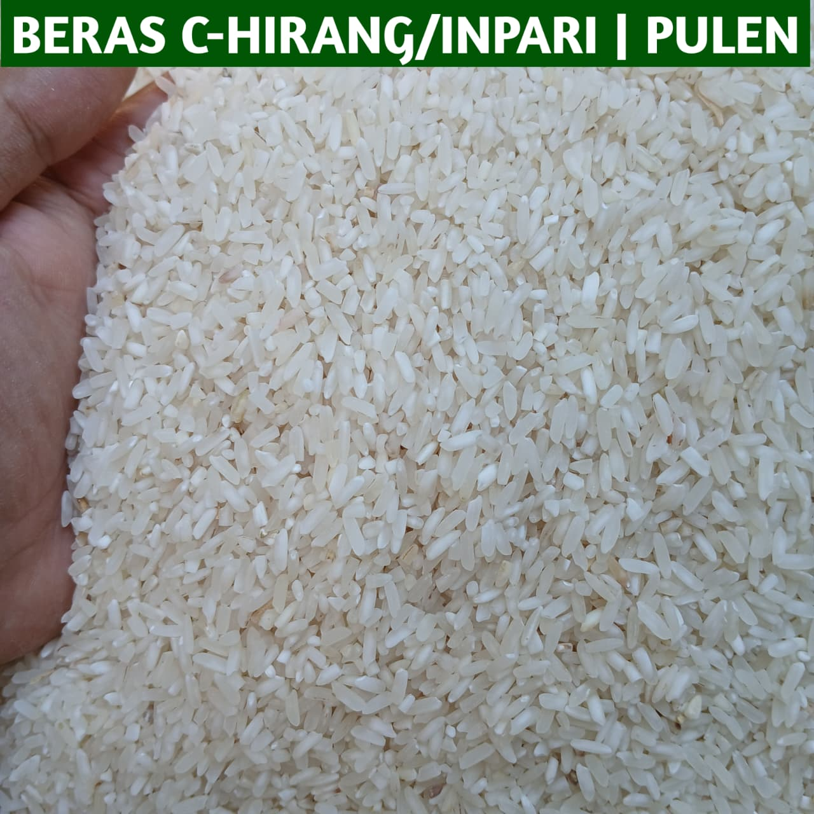
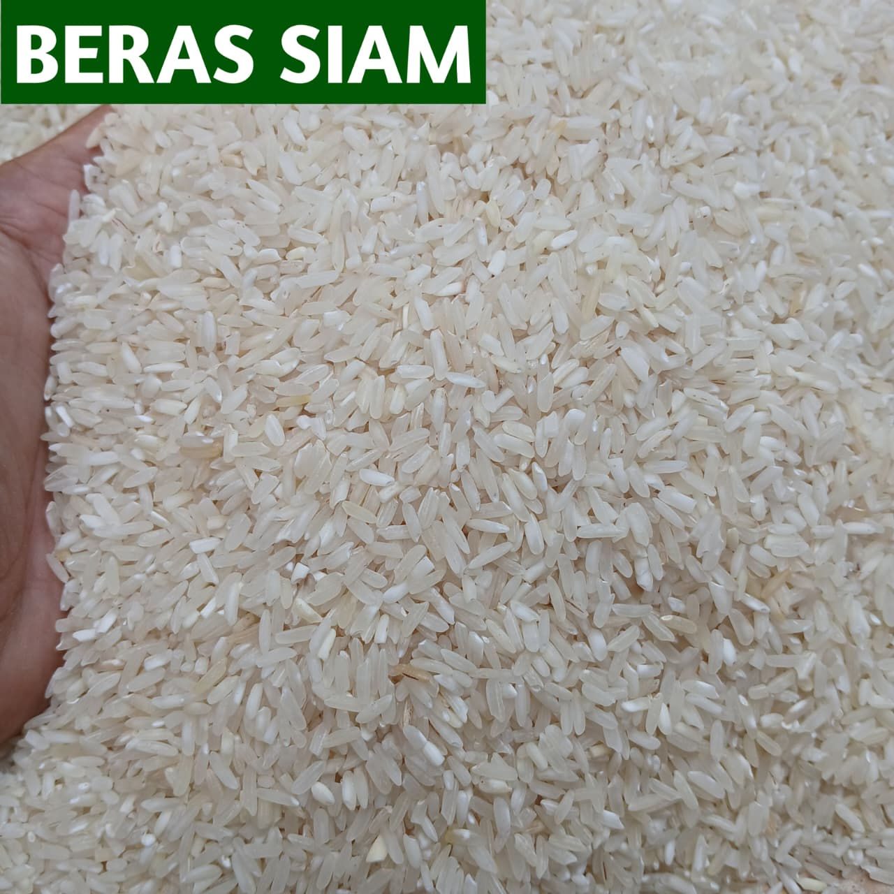
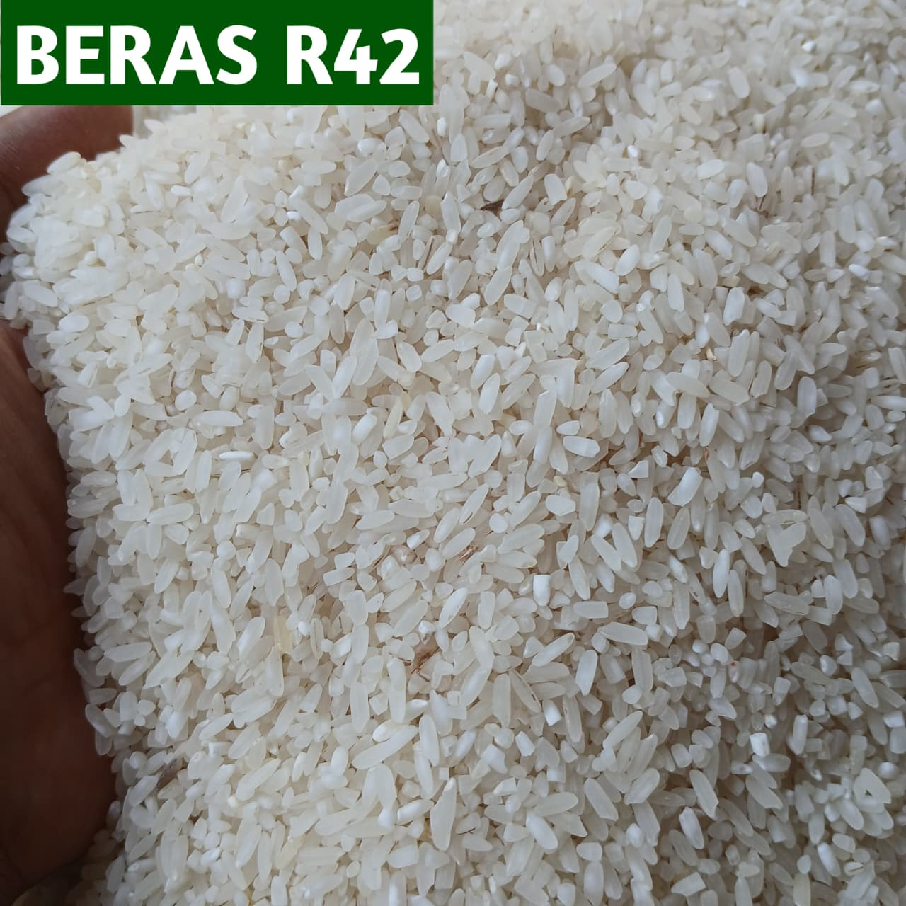
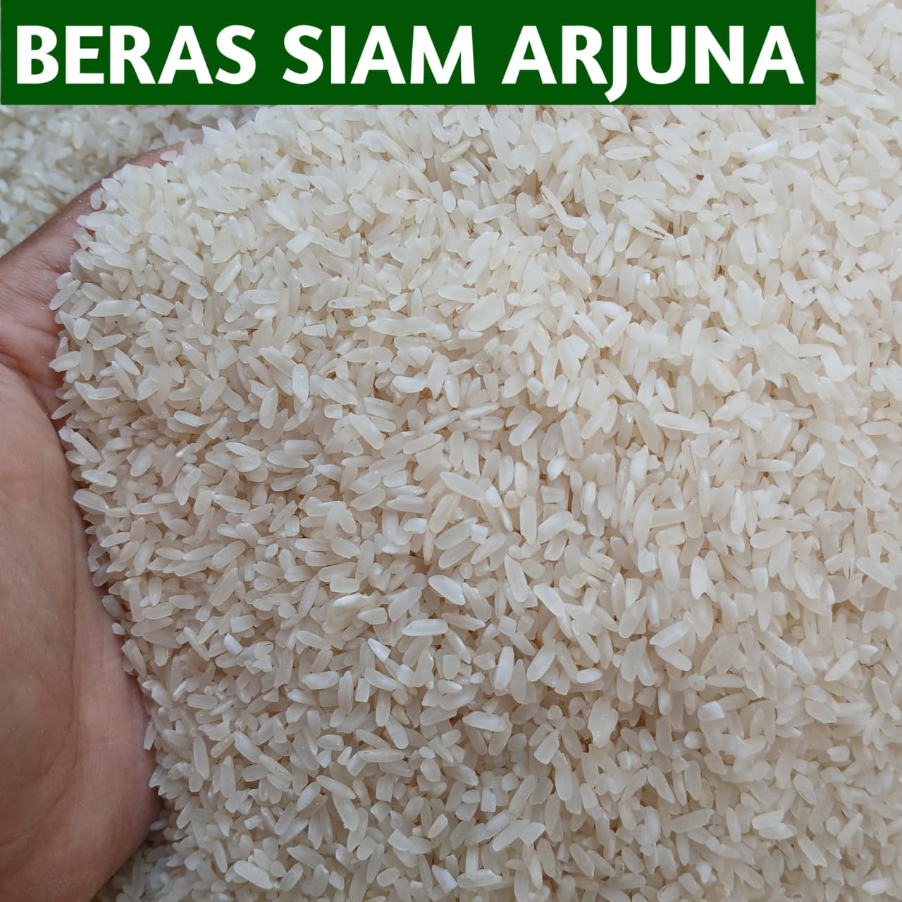
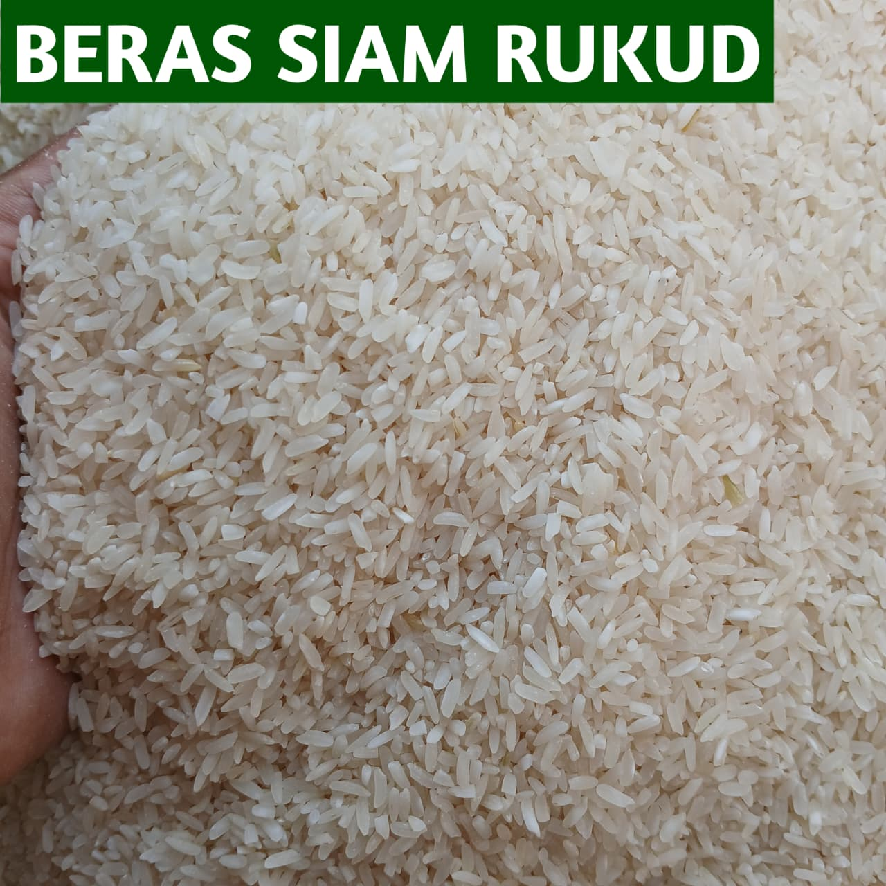
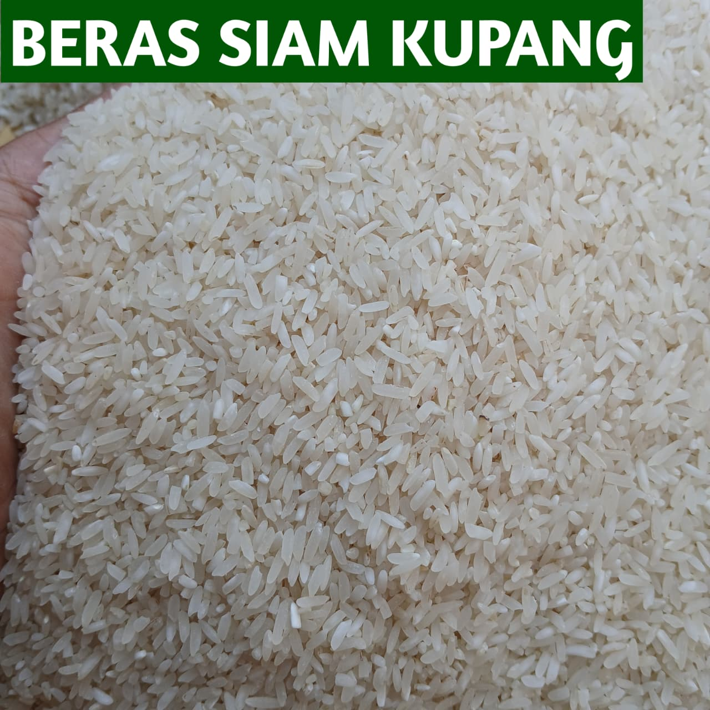
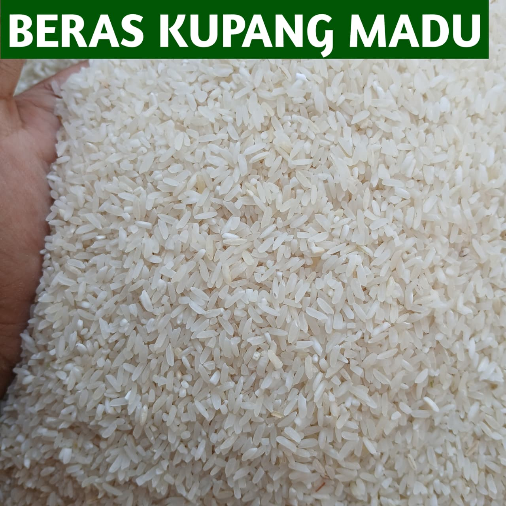
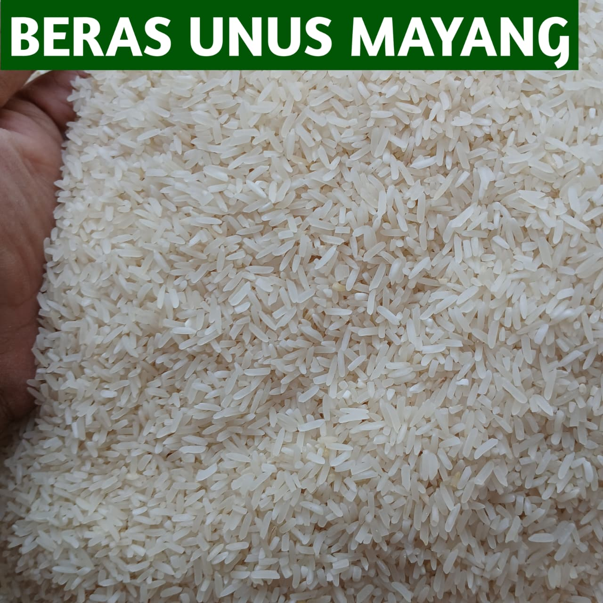
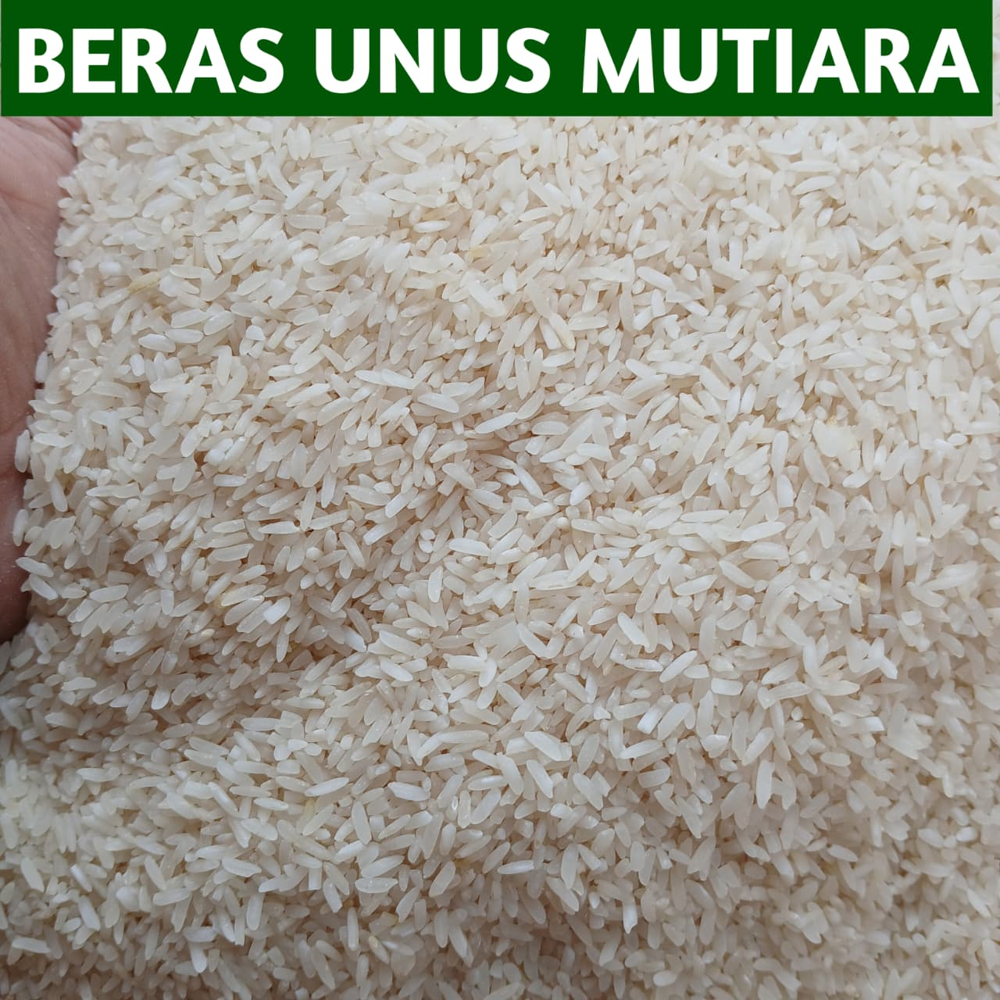
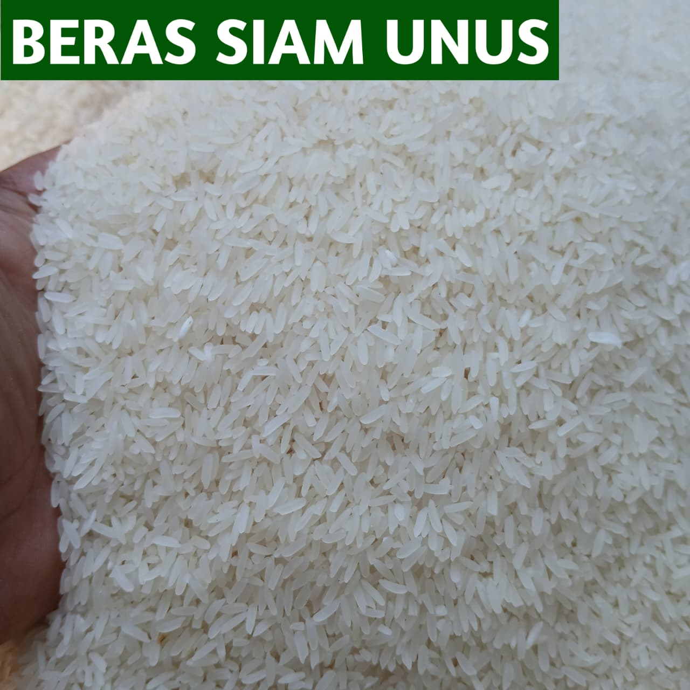

Praktis
Kemasan siap takar membantu konsumen menggunakan beras sesuai kebutuhan tanpa harus menakar ulang setiap kali akan memasak.
Banua Gambut Pangan
Temukan berbagai jenis beras berdasarkan asal, tekstur, dan menu yang ingin dibuat. Banua Gambut Pangan membantu proses memilih beras menjadi lebih sederhana, informatif, dan sesuai dengan kebutuhan.
Mengapa Banua Gambut Pangan?
Banua Gambut Pangan tidak hanya menyediakan pilihan beras. Setiap bagian website dirancang untuk membantu konsumen memahami produk sebelum menentukan beras yang sesuai kebutuhan.
Kemasan siap takar membantu konsumen menggunakan beras sesuai kebutuhan tanpa harus menakar ulang setiap kali akan memasak.
Banua Gambut Pangan menyediakan berbagai pilihan beras dengan asal dan karakter tekstur yang berbeda sehingga konsumen memiliki lebih banyak pilihan.
Setiap produk dilengkapi informasi mengenai asal beras, tekstur nasi, rekomendasi menu, cara memasak, dan cara penyimpanan.
Fitur Cari Beras membantu konsumen menemukan produk berdasarkan menu yang ingin dibuat sehingga proses memilih beras menjadi lebih sederhana.
Kenali Karakter Beras
Tekstur merupakan salah satu pertimbangan utama ketika memilih beras. Banua Gambut Pangan membagi karakter beras ke dalam empat kategori agar konsumen lebih mudah memahami hasil nasi setelah dimasak.
Butiran nasi cenderung lebih terpisah, tidak terlalu lengket, serta memiliki tekstur yang lebih kering dan kokoh.
Nasi memiliki tekstur lebih lembut, lebih menyatu, dan cenderung lebih lengket dibandingkan beras pera.
Karakter nasi berada di antara pera dan pulen sehingga lebih fleksibel digunakan untuk berbagai kebutuhan.
Nasi tidak termasuk pulen tetapi memiliki tekstur yang lebih lunak dan tidak sekokoh beras pera atau karau.
Pilihan Beras Kami
Kenali pilihan beras Banua Gambut Pangan berdasarkan asal dan karakter teksturnya. Buka setiap produk untuk melihat informasi yang lebih lengkap sebelum menentukan pilihan.

Hulu Sungai, Barabai
Beras C-Hirang atau Inpari berasal dari Hulu Sungai, Barabai. Setelah dimasak, beras ini menghasilkan nasi dengan tekstur pulen dan lembut.

Banjar
Beras Siam memiliki karakter tekstur sedang sehingga berada di antara pera dan pulen. Beras ini merupakan beras campuran dengan pilihan harga yang lebih terjangkau.

Hulu Sungai, Barabai
Beras R42 berasal dari Hulu Sungai, Barabai dan memiliki tekstur nasi yang tergolong lemah. Beras ini merupakan beras hasil panen baru.

Gambut
Beras Siam Arjuna merupakan salah satu pilihan beras asal Gambut dengan karakter nasi pera atau karau. Setelah dimasak, butiran nasi cenderung lebih terpisah.

Gambut
Beras Siam Rukud berasal dari Gambut dan memiliki karakter nasi pera atau karau. Tekstur nasi cenderung terpisah setelah matang.

Hulu Sungai, Rantau
Beras Siam Kupang berasal dari Hulu Sungai, Rantau dan memiliki tekstur nasi yang tergolong lemah. Produk ini merupakan beras hasil panen baru.

Tanah Laut, Pelaihari
Beras Kupang Madu berasal dari Tanah Laut, Pelaihari dan merupakan beras hasil panen baru dengan karakter nasi yang lebih lunak.

Gambut
Beras Unus Mayang merupakan salah satu beras asal Gambut yang dikenal di Kalimantan Selatan dan menjadi salah satu produk best seller.

Gambut
Beras Unus Mutiara merupakan beras asal Gambut dengan tekstur nasi pera atau karau. Setelah dimasak, nasi memiliki karakter lebih terpisah.

Gambut
Beras Siam Unus berasal dari Gambut dan memiliki karakter tekstur lemah. Nasinya tidak termasuk pulen tetapi memiliki tekstur yang lebih lunak.
Cari Beras
Pilih menu yang ingin dibuat dan kami akan membantu mempersempit pilihan beras berdasarkan karakter produk yang tersedia.
Tentang Banua Gambut Pangan
Banua Gambut Pangan berkembang dari aktivitas penjualan beras yang sebelumnya dilakukan melalui Toko Beras Iki. Dari proses tersebut ditemukan bahwa konsumen sering membeli beras untuk persediaan, tetapi tetap memasak dalam jumlah yang lebih kecil dan harus melakukan penakaran ulang.
Banua Gambut Pangan kemudian menghadirkan konsep kemasan siap takar dalam ukuran 1 liter, ½ liter, dan 1 mug serta memberikan informasi mengenai karakter setiap beras agar konsumen dapat memilih produk dengan lebih mudah.
Selengkapnya Tentang Kami ➜Mulai dari Sini
Lihat seluruh pilihan beras Banua Gambut Pangan atau gunakan fitur Cari Beras untuk menemukan produk berdasarkan menu yang ingin dibuat.